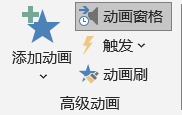
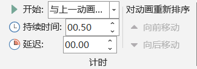
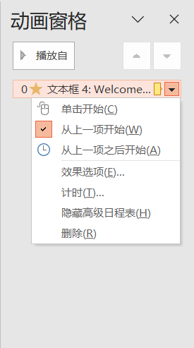
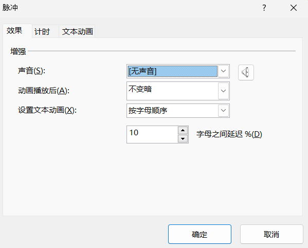

动画
Animations
- 为幻灯片对象创建动画
- 可以为幻灯片对象添加多个动画
- 以下内容未按选项卡和分组介绍
- 动画类型
- 系统提供4种动画类型；不同的动画类型使用不同的颜色以示区分
- 1. 进入：对象第一次出现 | 进入 | 从无到有
- 2. 强调：对象已经出现
- 3. 推出：对象消失 | 离开 | 从有到无
- 4. 路径：对象按照指定路径完成动画
- 复制动画
- 动画刷：复制动画；将一个对象已经设计好的动画复制到另外一个对象；提高开发效率
- 快捷键：Alt + Shift + C
- 基本流程
- 1.选择对象
- 2.指定动画效果
- 3.设置动画具体效果
- 4.根据需要添加其他动画
- 5.预览动画
- 动画设置
-
 高级动画  计时设置  动画窗格  动画详细设置 - 进入动画
- 1.基本缩放
- 2.擦除：向上、下、左、右擦除
- 3...
- 强调动画
- 1.陀螺旋
- 2.对象颜色
- 3.脉冲
- .一次显示全部
- .按词顺序
- .按字母顺序
- 4...
- 退出动画
- 1.淡化
- 2.
- 路径动画
- 1.直线
- 2.弧线
- 3.转弯
- 4.形状
- 5.自定义路径